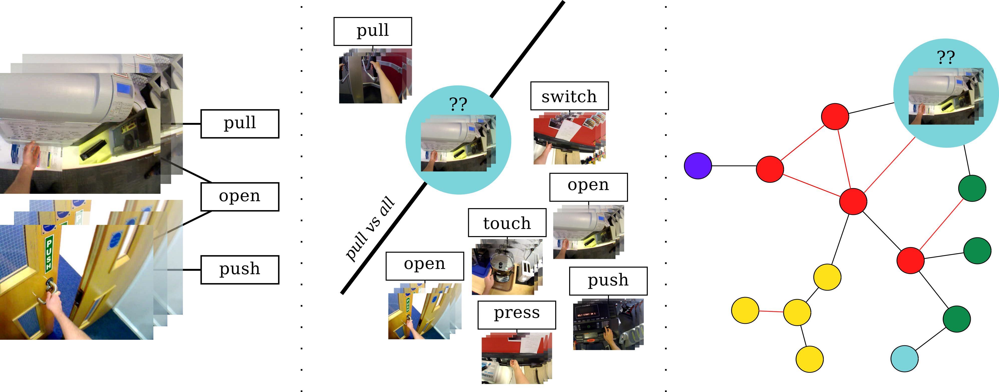

Michael Wray*, Davide Moltisanti*, Walterio Mayol-Cuevas, Dima Damen
* Denotes equal contribution
Egocentric Action Recognition has largely been performed on datasets where annotators had a choice from a finite set of semantically distinct verbs.
When allowed free choice over both the verb chosen to describe an action and the temporal boundaries the resulting dataset contains a wide variety of different labels. Whilst these labels are diverse we treat them all as correct labels. Standard one vs. all classifying techniques, such as SVM, are unable to deal with the ambiguities introduced by the free annotations and so a graphical approach is introduced.
We present SEMBED, a method which is capable of dealing with the ambiguity within the dataset by embedding videos in a Semantic Visual Graph. Multiple state-of-the-art features have been tested (in the form of Improved Dense Trajectories and Overfeat CNN) along with Bag of (Visual) Words and Fisher Vectors as encoding methods. We find that SEMBED using the notion of embedding videos in a graph that are linked visually and/or semantically is able to beat SVM by more than 5%